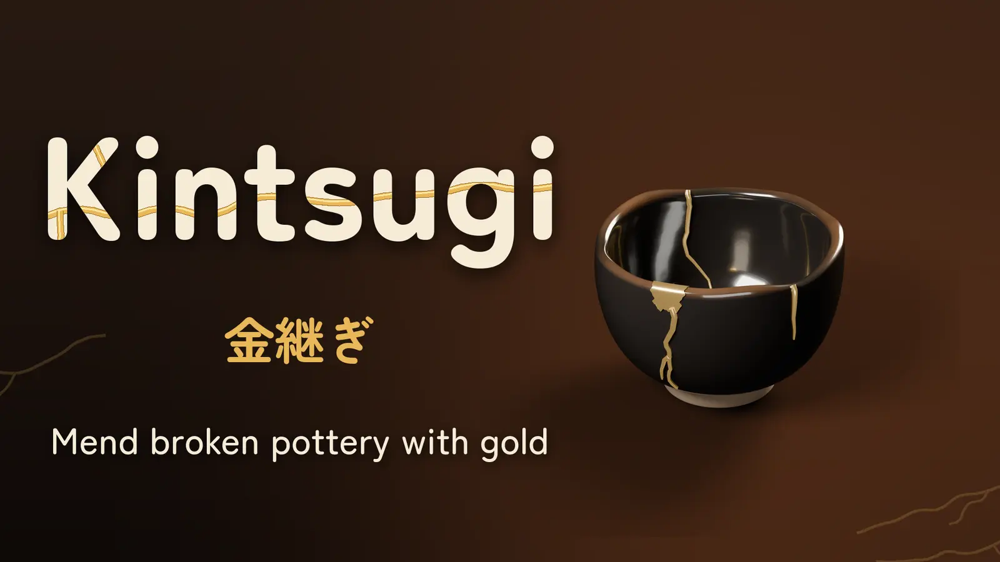
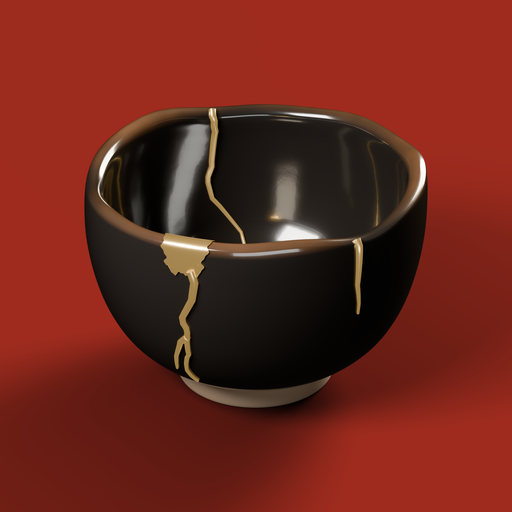
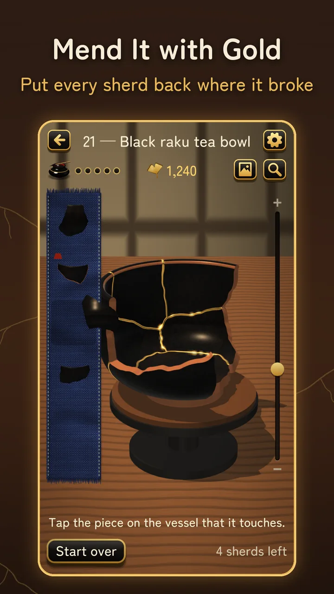
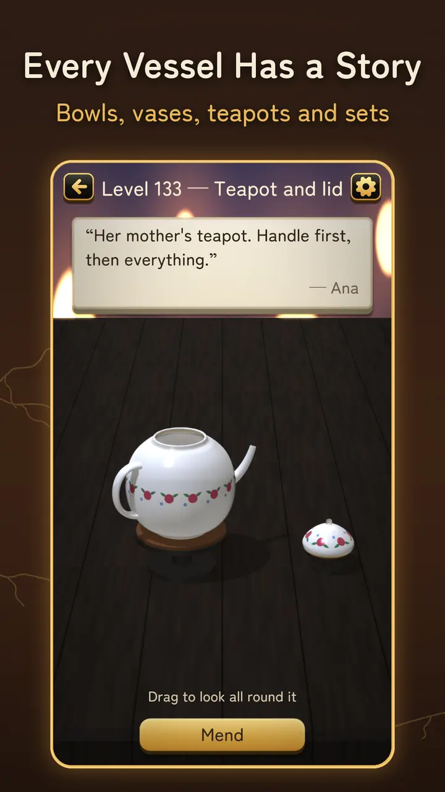
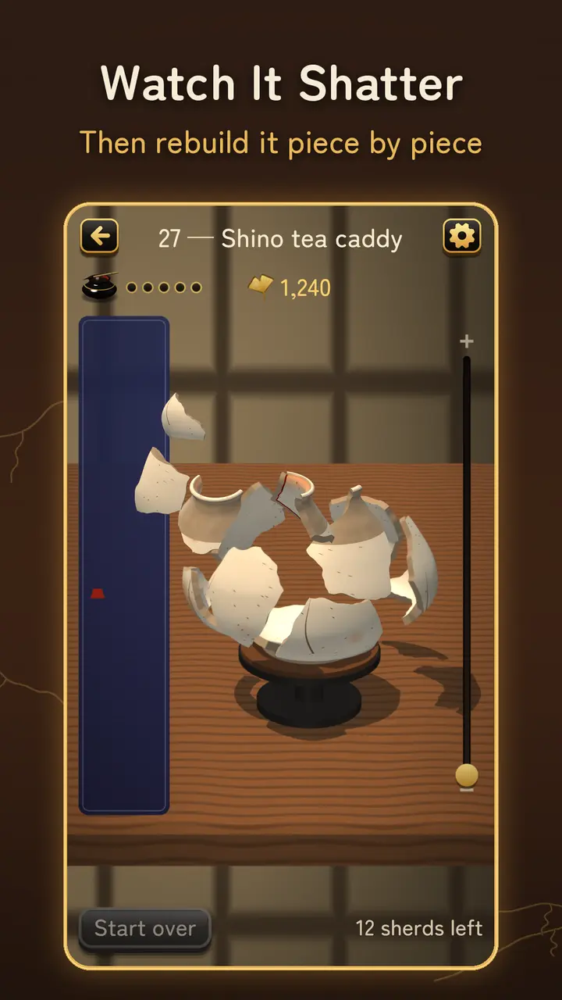
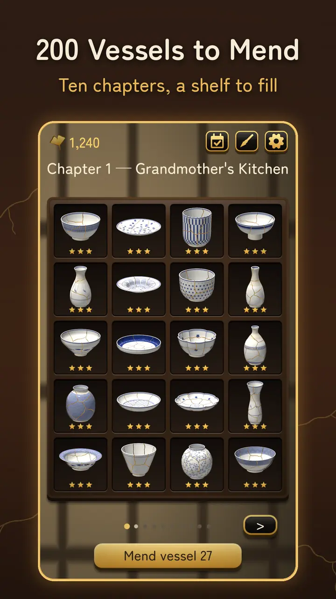

Kintsugi
Mend broken pottery with gold. A calm 3D puzzle of 200 vessels and their stories.
About the game
Kintsugi is a calm 3D puzzle about mending broken pottery with gold. In the Japanese craft of kintsugi, a break is not hidden: it is filled with lacquer and gold, and the bowl becomes more beautiful than before.
You have inherited a small kintsugi workshop, and broken vessels arrive with a note from their owners. Study each one whole as it turns on the wheel, watch it shatter, then put it back together piece by piece. Every join turns to gold, and when the last sherd goes in, a wave of gold runs through every seam.
No timers, no lives, no energy: take as long as you like. Stuck? The loupe points out one sherd and the piece it belongs next to.
- 200 vessels in ten chapters, each with a new owner
- Spend no lacquer on wrong guesses for three stars
- Tea bowls, teapots and moon jars in many glazes
- Keystones, gold pours, stray and crusted sherds
- A Daily Vessel, and mended vessels to smash anew
- No in-app purchases, and the loupe is your choice
- Glazed 3D pottery, rendered on our own engine
Screenshots

Mend it with gold 
Every vessel has a story 
Watch it shatter 
200 vessels to mend


Watch the intro
A teacher's tea bowl, from the moment it shatters to the last seam of gold.
Everything in it - the workshop, the wheel, the sherds and the gold - is the game's own.
Privacy
Kintsugi has no accounts, no in-app purchases and no server of its own, and we collect nothing about you. Your progress, gold leaf and settings are kept on your device.
The game shows ads from Google AdMob, which collects your device's advertising identifier and similar data to serve them. In the European Economic Area, the United Kingdom and Switzerland the game asks for your consent before any ad is loaded, and you can change your answer at any time.